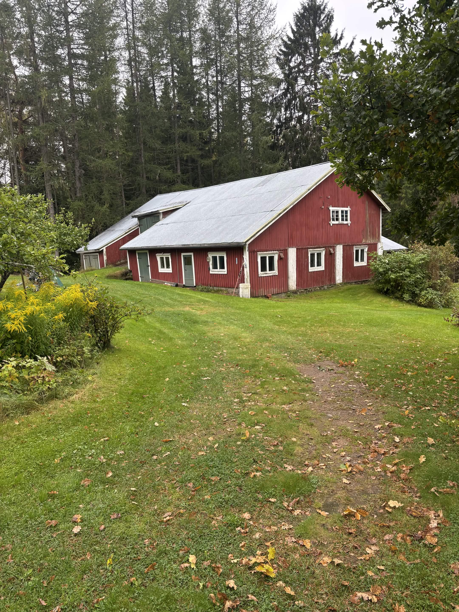
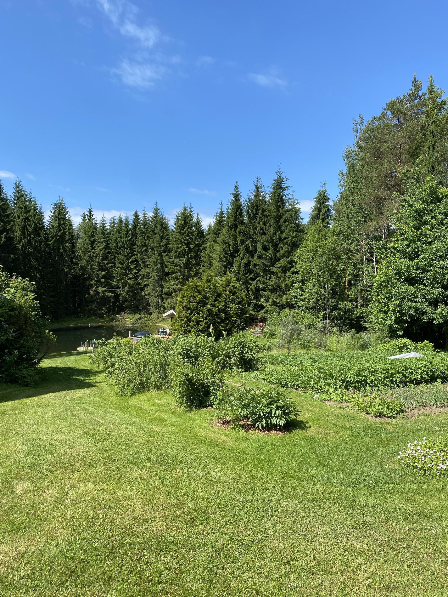
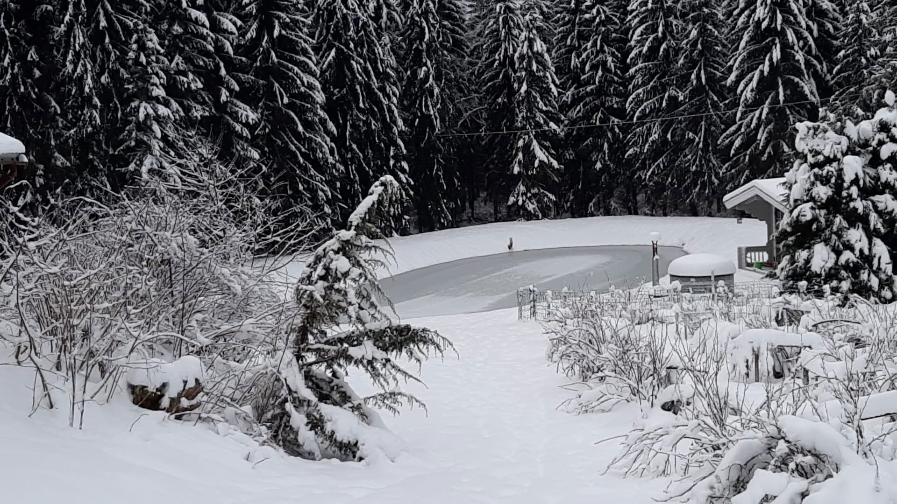

Kuvat
Navetta


Kuvan navetta on pihan vanhin rakennus. Navetassa on asunut aikoinaan hevosia, lehmiä ja kanoja.Alapiha


Kuvassa näkyy Keskitalon "alapiha" josta löytyy sauna, palju, terassi ja pieni pelto.Talvi


Kuvassa näkyy Keskitalon lampi talvimaisemassa.